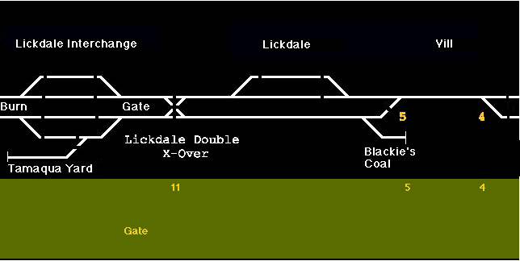
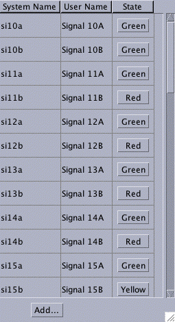

This page walks you through creating a simple control
panel for your own layout. This example is based on the
Lickdale panel for
Nick Kulp's Cornwall Railroad,
but you should be able to create a panel for your own layout
by following these instructions. More information is available
on how to you can
run Nick Kulp's Cornwall RR Program
to see what it's like, and on
how his program was written.
The first step is to draw the background of the panel as a GIF file.
Use your favorite
In this case, the track schematic was drawn as 3-pixel white lines on a
black background, with connecting lines for turnouts drawn at a 45 degree angle.
You can do this with any paint program you happen to have, but this picture
was drawn with "GraphicConvertor" on a Macintosh.

If you want to follow along here, download that picture (right click on the picture
and "Save As...") as "Lickdale.gif".
To turn this picture into a control panel, you have JMRI create a
panel that displays this as a background.
You then place "icons" in front of it that are redisplayed as the layout status
changes.
To create the control panel:
Start PanelPro.
If you've not used it before, set the preferences
to connect to your layout, save them, quit the program and restart.
If you don't have a layout connection yet, you
can still experiment by selecting "LocoNet HexFile" which gives
you a "Simulated LocoNet".
For more information on PanelPro, please see it's
main page.
Start the panel editor by selecting "New panel..." from the "Panel" menu.
You'll get a blank control panel, plus the editor window:
For background info on the panel editor, see the
Panels page.
Click the "Pick background image..." button. This will open
the familiar dialog for picking an file. Move to where your background
file is, and open that file. It will then appear as the background in the
panel.
You can now resize the panel until your entire background image
is visible, and move it to some convenient place on the screen.
Click the "Set panel name" button on the editor. A dialog
will open that lets you enter a name for this panel, which will appear
at the top of the window.
At this point, you've defined the beginning of your panel, but you
haven't permanently stored it yet.
You have to save the panel before you quit the program, or it will be lost.
To do that:
From the "Panels" menu on the main PanelPro window,
select "Store panels...". This will open
a familiar file dialog.
Select a directory and filename to save your current panel
setup. We traditionally use a ".xml" extension, but you're welcome to
use whatever you'd like.
To check that the file was stored OK:
Close your panel window. This will make both the new panel
and the panel editor disappear.
From the "Panels" menu on the main PanelPro window, select
"Load panels..."
In the file dialog that just opened, select and open the
file you previously stored.
Your panel should reappear on the screen, in the same position it was
when you stored it.
Note that storing the panel layout saves all the control panels visible
at that moment, even if you have more than one.
PanelPro uses the
JMRI
software for block occupancy sensors to control icons on the screen.
A block occupancy sensor has four states:
Active - the block is occupied
Inactive - the block is unoccupied
Unknown - the layout hardware hasn't reported the block's status yet
Inconsistent - some sort of error has occurred, and we don't know the status
PanelPro will display a different icon on the screen for each of these
states.
For example, there are icons for lit
and unlit
red LED indicators. By displaying a red LED when
a particular block is occupied (sensor active), and a gray one when the
block is unoccupied (sensor inactive), you get an occupancy indication on the
panel.
You'll need to know the JMRI names for your block sensors.
You can figure these out from the wiring
(see the
JMRI naming pages for info)
but it's usually easier to have the program do it if you're connected to
your layout.
From the "Tools" menu on the main window, select "Sensor Table".
(You might need to make the window larger; you can also change the
width of the columns by dragging at the top)
If you have a Digitrax or C/MRI system connected, your occupancy sensors will have
already made entries the table for each sensor. They'll appear
in the "System Name" table with names like CS21 (Input 21 on the C/MRI system)
or LS34 (Loconet Sensor 34). You can fill in the "User Name" column with
anything you want to display about this sensor later. For example, the
Cornwall Railroad gives geographic names to it's blocks, and includes them here.
If you're not connected to a layout, or have other hardware,
you'll have to manually define your sensors. Click "Add..." at the bottom
of the Sensor Table window, which will pop a dialog box. Enter a
system name (and optionally a user name) for the new sensor, and click
"OK". You can repeat this as many times as needed.
The button at the right side of each row in the table will respond
to changes read back from the layout. If you put an engine in a block,
the corresponding row should change to "Active", and then change to "Inactive"
when you remove it.
Once you've found the system name for a block sensor (for example, "CS21"), you can add an indicator
to the panel that follows that sensor:
Go to the panel editor window for your panel.
In the field next to "Add Sensor:", type the name
(for example, CS21).
Click "Add Sensor:". A small icon will appear near the
upper-left on your panel. By default, it appears as a little red circle.
If you let the cursor arrow "dwell" over that circle, you should
see a tooltip pop up that tells you it's name.
To move it to the right place, drag it with the right mouse button, or
while holding down the option key, then drop it where you want it.
If you control-click (or right click) on it, you'll get a small pop-up
menu that can be used to remove the icon, or rotate the icon. (There's no
reason to rotate the round default icon, but it will be useful later)
You can repeat this as many times as you'd like to add extra icons. You can
also have more than one icon "listening" to a single input, for example
if a block appears at both the right and left edges of the panel.
If you don't like the default icons, you can change them.
Click "Edit icons..." next to "Add Sensor:".
An icon editor window will open. (See right)
There are four icons at the top which you can change, plus a window
containing a tree of available icons. (You can also add your own, see below)
To find the nice LED icons, click "resources", then "icons", then
"mediumschematics", then "LEDs". That will open up the tree so that it
looks like the example to the right (you might have to resize the window
to see it all).
Now you can change each icon by selecting the file from the window (the
blue bar in the image to right), and clicking on the icon at the top
that you want to change. In the example to the right, the "Active" icon
has just been clicked to show "REDLED.gif" when the sensor is active.
Be sure to save the panel to a file when you're done! This will also
save any sensor definitions or user names you've entered.
If you have lots of icons to place, this can become unwieldy. The panel
definition is stored in a human-readable form in an XML file, which you
can directly edit. Each icon on the screen in one line on the screen, with
some extra stuff at the top and bottom of the file. The format is almost
self-explanatory. x="12", for example, means draw the icon at an x coordinate
of 12 pixels; the top left corner is 0,0 (x, y), with y growing down the screen.
You can duplicate and
edit lines with your favorite editor. For example, if you want to have
to icons line up on a horizontal line, you might find it easier to position the
first item perfectly by hand, and then edit the rest of the lines to have the
same y= coordinates.
Next, we add the turnout controls. These send a message to the
layout hardware when clicked, which changes the position of the
associated turnout. The icons
show two different images depending on whether the turnout has been commanded
to be "Closed/Normal"
or "Thrown/Reversed"
.
First, find the turnout number that controls the desired turnout. One way
to do this:
Open the Turnout Control tool from the Tools menu on the main window.
You can enter a turnout number, and click the Thrown and Closed buttons to
see if it works right.
Once you've got the turnout working, open the "Turnout Table" from
the Tools menu and find the system name for that turnout. Note that
you can also change the turnout state from the turnout table by clicking
the button on the right side of the row.
Once you have the correct number, to add the icon to the panel:
Go to the panel editor.
First, you need to select the proper icons to use.
Click "Edit icons..." next to "Add right-hand turnout..."
(Right-hand and left-hand turnout buttons are just provided to
have different default icons; they work the same).
In the icon editor window that opens, open "resources", then "icons",
then "CTCpanels", then "CtcPlates60x60".
Select "plateSwitchN.gif", then click on the "Closed:" icon at the top.
Select "plateSwitchR.gif", then click on the "Thrown:" icon at the top.
Select "plateSwitch.gif", then click on the "Inconsistent:" icon at the top.
Select "plateSwitch.gif", then click on the "Unknown:" icon at the top.
Go back to the panel editor window.
Put the turnout name (e.g. LT21) in the field next to "Add right-hand turnout:"
Click "Add right-hand turnout:"
The icon should have appeared near the upper left of your panel.
Option-drag it to where you want (or drag with the right mouse button, depending
on what type of computer you have)
You can repeat the last few steps as many times as you want; your icon
selections are remembered until you quit the program.
The turnout number over the switch plate was added as part of the background picture.
You could also add text via the panel editor to do this. (There is a popup menu
on text added this way that lets you set it's size and color)
At this point, you've got a functional panel.
Congratulations!
The rest of this page discusses various ways to include additional
neat features such as turnout sensing from the layout and signal
indicators.
Nick also wanted the turnout controls to look like they had small indicator
lamps over each side to show the actual status of the turnout. This was done
by adding two sensor icons there. The one on the left would show
if the turnout was closed, and
if it was thrown. The icon on the right
would do the reverse, showing
if the turnout was closed, and
if it was thrown. These were attached to inputs
on the C/MRI system, so that the actual position of the turnouts on the
layout was read back. This way the indicators on the panel showed the
real position of the turnout, not just what command had been sent to the motor.
To add these, go back to the panel editor for your panel. Click "Edit Icons..."
next to "Add sensor", and select the images you want to display. (Nick's small
lights are in "Icons : smallschematics : LEDS"). Then enter the name of the sensor
for the first turnout, and click "Add sensor" to put it on the screen. Drag-click
it to move it into position near the turnout control. Repeat that for all
of the rest of the indicators on the thrown side of the turnout levers, providing
the right sensor number each time. Then change the icons to the 2nd set, and
go back and add sensors to the other side of each lever.
A similar technique is used for the turnouts on the schematic. The indicators
on the schematic are meant to show the actual positions of the turnouts, not
just the last status sent by the DCC system, so they respond to the C/MRI sensors
using two icons:
and
.
These are positioned over the turnouts on the track schematic background.
They cover (with the little back blob) a bit of track on either the normal
or diverging route, so that the screen displays only one line as complete.
In this case, these icons were made by clipping a few pixels from the
background drawing.
(Details...)
There are "left" and "right" sets for the two basic types
of turnouts used; they can be rotated via the popup menu to work with the various
turnout orientations on the schematic.
Below here is not revised yet!
Signaling
Signaling is a vital part of the Cornwall Railroad's operations. If JMRI
was going to drive the railroad, it had to properly handle the signals.
(There's no way to share the C/MRI system between the existing BASIC program for
driving signals, and a new program for the dispatcher panel).

To define the signals to the program, you use the "Signal Table" from the tools
menu.
The program can't detect what signals you have installed on your layout,
so you have to define them individually. To do this, start by opening the
Signal Table, and then click the "Add..." button. A new window will open.
PanelPro knows about several different types of signals. Each has different
information needed to specify it, so on the "Add" panel you first select the
type of signal you have, and then provide additional information:
Triple Turnout
This a signal head with red/yellow/green lights that
are driven by DCC turnout outputs. To configure one of these,
enter it's name (typically something like IH2, etc), and
the names of the three turnouts that drive the lamps.
SE8c 4 aspect
This is one signal head driven by a Digitrax SE8c. Enter
the the lower of the two "turnout address" that this head
responds to. For example, if it's the first head on the first
card, you can control it by setting turnout 257 and 258 with
your throttle. Enter LT257 in the turnout control box.
After filling in all the fields, click OK. The signal will be added to the
table. You can use that same form to add all your signals by changing the values
and clicking OK each time. Don't forget to save your work occasionally!
You can check your work by clicking on the buttons in the table. With each
click, the signal will work its way through the sequence of available aspects:
Red, Yellow, Flashing Yellow, Green. (The available aspects and the order they
are presented will vary from one type of signal to another) The signals
on the layout should follow along.
To use this, open the tool from the "Tools" menu. You should get a
new window that looks like this:
To define what you want done, you just enter values on this form.
In the top box, enter the name of the signal you want to control.
This should be the same as the name in the signal table.
The radio buttons below that select one of four possible uses
for this signal:
"On Single Block" - this signal protects one end of a straight
through block, with no signalled turnouts
"On Main Leg of Trailing-Point Turnout" - this signal is along
the main route through a turnout, which is defined as the direction
taken by trains when the turnout is closed. It's protecting the
frog of the turnout so that trains will stop before running
through a turnout set against them.
"On Diverging Leg of Trailing-Point Turnout" - this signal is along
the diverging route through a turnout, which is defined as the direction
taken by trains when the turnout is set to "thrown". It's protecting the
frog of the turnout so that trains will stop before running
through a turnout set against them.
"On Facing-Point Turnout" - this signal is protecting the
points-end of a turnout. Depending on whether the turnout is
thrown or closed, the train will take two different routes, and the
signal will protect different next blocks.
If you want the signal to go red when a block detector shows
occupied (sensor active), enter the sensor name in the next box.
If this signal is protecting travel through a turnout, enter the
turnout number to be monitored in the 3rd box.
You'll have additional options depending on whether you've selected
a trailing or facing point turnout.
If you want multi-block logic, e.g. Absolute Block Signaling,
enter the name of the following signal in the last box(es). When that
signal shows red, this one will be set to yellow to warn the engineer
that the train must be able to stop at the next signal.
If you'd like to give additional warning, click the "with flashing
yellow" checkbox. In that case, the signal before a red will show
flashing yellow, and the signal before that flashing yellow will
show a steady yellow.
Once you've set the options, click "OK".
You can
use this form repeatedly to enter logic for as many
signals as you'd like. Just enter the values, not forgetting
to change the signal name in the first box, and click OK
for each signal.
Don't forget to save your work!
You can test this logic by changing the sensors, turnouts and signals
using either the various tables, or by clicking on a panel. The signals
on the layout and the signal icons on the panel should respond appropriately.
int value = GREEN;
if ( !tu7 || bo15 || tu8 )
value = RED;
else if (!tu9 && bo22)
value = RED;
else if (tu9 && bo23)
value = RED;
if (value == GREEN && !tu9 && si87)
value = YELLOW;
else if (value == GREEN && tu9 && si90)
value = YELLOW;
Note that although prototype signals use logic that "starts with red, and see
if you can find a reason to turn it green", the existing Cornwall logic was
written the other way around. Rather than change that, we wanted to get that
same logic into the new program with as little change as possible.
JMRI makes it very easy to debug this logic, as the program doesn't
have to be connected to the layout to let you test it. You can change the
state of an occupancy detector or turnout sensor on the display (though clearly not
on the layout itself!) by clicking on it, and then see whether the signals
respond appropriately. Even complicated interlocking logic can be
checked out quickly using this.
Summary
The process to create the Cornwall signaling and dispatcher panel was
straightforward, if a little long.
Many people
have contributed to this effort, and we thank
all of them.

 and unlit
and unlit
 red LED indicators. By displaying a red LED when
a particular block is occupied (sensor active), and a gray one when the
block is unoccupied (sensor inactive), you get an occupancy indication on the
panel.
red LED indicators. By displaying a red LED when
a particular block is occupied (sensor active), and a gray one when the
block is unoccupied (sensor inactive), you get an occupancy indication on the
panel.


 or "Thrown/Reversed"
or "Thrown/Reversed"
 .
.

 Nick also wanted the turnout controls to look like they had small indicator
lamps over each side to show the actual status of the turnout. This was done
by adding two sensor icons there. The one on the left would show
Nick also wanted the turnout controls to look like they had small indicator
lamps over each side to show the actual status of the turnout. This was done
by adding two sensor icons there. The one on the left would show
 if the turnout was closed, and
if the turnout was closed, and
 if it was thrown. The icon on the right
would do the reverse, showing
if it was thrown. The icon on the right
would do the reverse, showing
 if it was thrown. These were attached to inputs
on the C/MRI system, so that the actual position of the turnouts on the
layout was read back. This way the indicators on the panel showed the
real position of the turnout, not just what command had been sent to the motor.
if it was thrown. These were attached to inputs
on the C/MRI system, so that the actual position of the turnouts on the
layout was read back. This way the indicators on the panel showed the
real position of the turnout, not just what command had been sent to the motor.
 and
and
 .
These are positioned over the turnouts on the track schematic background.
They cover (with the little back blob) a bit of track on either the normal
or diverging route, so that the screen displays only one line as complete.
In this case, these icons were made by clipping a few pixels from the
background drawing.
(
.
These are positioned over the turnouts on the track schematic background.
They cover (with the little back blob) a bit of track on either the normal
or diverging route, so that the screen displays only one line as complete.
In this case, these icons were made by clipping a few pixels from the
background drawing.
( ,
yellow
,
yellow  ,
flashing yellow
,
flashing yellow  ,
green
,
green  .
.